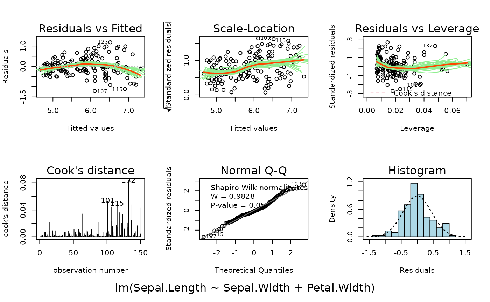
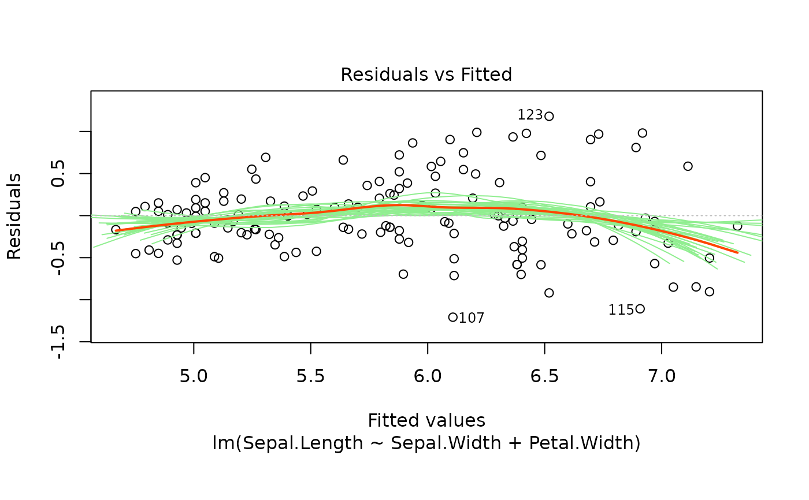
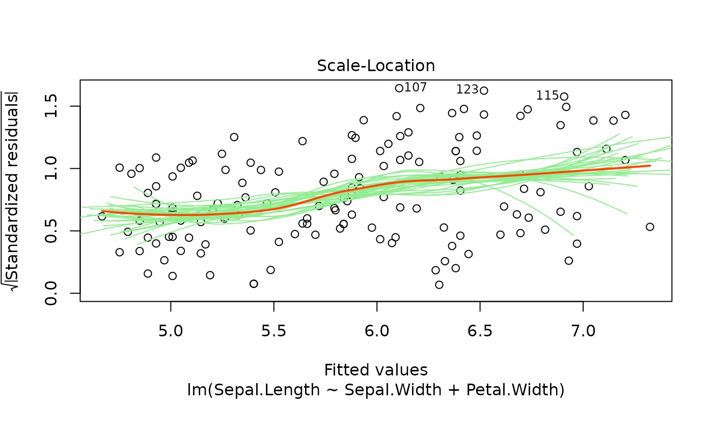
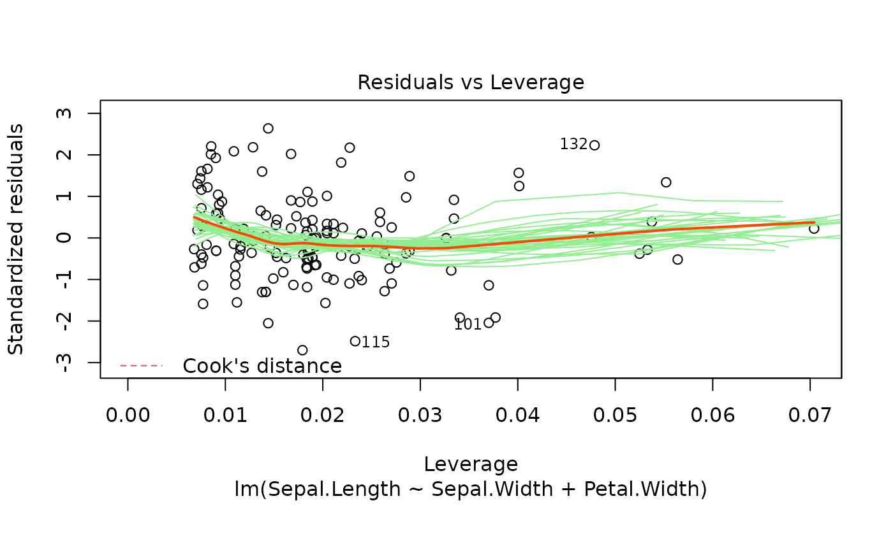

These plots are an extension of the original plots provided by
plot.lm.
Six plots are currently available: residuals versus fitted,
Scale-Location of \(\sqrt{| residuals|}\) against
fitted values, residuals against leverages, Cook's distance, Normal
Q-Q plot and histogram of residuals.
Also provided is the summary plot which shows all diagnostic plots
arranged in a 2 by 3 grid. By default, this is shown first, then each
of the individual plots in turn.
plotlm6(
x,
which = 1:6,
panel = if (add.smooth) panel.smooth else points,
sub.caption = NULL,
main = "",
ask = prod(par("mfcol")) < length(which) && dev.interactive(),
id.n = 3,
labels.id = names(residuals(x)),
cex.id = 0.75,
qqline = TRUE,
cook.levels = c(0.5, 1),
add.smooth = getOption("add.smooth", TRUE),
label.pos = c(4, 2),
cex.caption = 1,
showBootstraps = nrow(x$model) >= 30 && nrow(x$model) < 4000,
use.inzightplots = FALSE,
env = parent.frame(),
...
)an lm object, typically the result of
lm or glm. Can also take
svyglm objects.
numeric, if a subset of the plots is required, specify a subset of
the numbers 1:6. 7 will produce a summary plot showing
all of the plots arranged in a a grid. 1:6 will show the
summary plot followed by each of the single plots one by one
(default).
panel function. the useful alternative to points,
panel.smooth can be chosen by add.smooth = TRUE.
common title. Above the figures if there are more than one; used as
sub (s.title) otherwise. If NULL, as by
default, a possible abbreviated version of deparse(x$call) is
used.
title to each plot, in addition to caption.
logical, if TRUE, the user is asked before each plot,
see par(ask=.). Ignored when only one plot is being
shown.
number of points to be labelled in each plot, starting with the most extreme.
vector of labels, from which the labels for extreme plots will be
chosen. NULL uses observation numbers.
magnification of point labels.
logical, if TRUE, a qqline() is added to the
normal QQ plot.
levels of the Cook's distance at which to draw contours.
logical, if TRUE, a smoother is drawn to the appropriate
plots; see also panel above.
positioning of labels, for the left half and right half of the graph respectively, for plots 1--3.
controls the size of caption.
logical, if TRUE, bootstrap loess smoothers are drawn in the
first 4 plots. By default, only drawn for sample sizes of at least 30.
logical, if set to TRUE, the iNZightPlots
package will be used for plotting, rather than base R graphics.
environment for performing bootstrap simulations (i.e., to find the dataset!)
other arguments to be passed to through to plotting functions.
No return value; called for the side-effect of producing a plot.
For the residuals versus fitted values plot, we add bootstrapped
smoothers to illustrate variance. The smoother is also added to the
Scale-Location plot.
The Normal Q-Q and histogram plots are taken from the normcheck
function in the s20x package.
m <- lm(Sepal.Length ~ Sepal.Width + Petal.Width, data = iris)
plotlm6(m, which = 1)
# the summary grid:
plotlm6(m, which = 7)

# the default cycles through all 6 plots
plotlm6(m)


